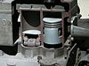

piston

Definition: A piston is a component of reciprocating engines, reciprocating pumps, gas compressors, hydraulic cylinders and pneumatic cylinders, among other similar mechanisms. It is the moving component that is contained by a cylinder and is made gas-tight by piston rings. In an engine, its purpose is to transfer force from expanding gas in the cylinder to the crankshaft via a piston rod and/or connecting rod. In a pump, the function is reversed and force is transferred from the crankshaft to the piston for the purpose of compressing or ejecting the fluid in the cylinder. In some engines, the piston also acts as a valve by covering and uncovering ports in the cylinder.
Source: Wikipedia
Wikipedia Page
Wikidata Page
Occurs in: